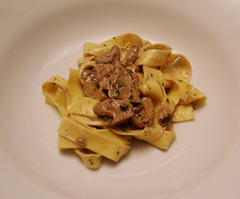

Tagliatelle Porcini
5,5 von 6frische porcini aus kalabrien, importiert leicht wurmig. in feine stücke schneiden und mit küchenpapier reinigen. auf mittlerer hitze in öl leicht anschwitzen, knoblauch und bouillon würfel zugeben und ca. 7min kochen. fein gehackter prezzemolo beigeben und mit rahm ablöschen. kurz brutzeln lassen und mit tagliatelle oder anderer gattung pasta vermischen und sofort servieren. fies.
